- Tracking a Dog
- Extracting Information from Sensor Readings
- Noisy Sensors
- Incorporating Movement
- Terminology
- Adding Uncertainty to the Prediction
- Generalizing with Convolution
Discrete Bayes Filter
충북대학교 지능로봇공학과 문성태 교수
Contents
- Integrating Measurements and Movement Updates
- The Discrete Bayes Algorithm
- The Effect of Bad Sensor Data
- Drawbacks and Limitations
- Tracking and Control
- Bayes Theorem and the Total Probability Theorem
- Summary
Bayesian Filters
- 계열: Kalman filter 는 Bayesian filter 라는 필터 계열의 한 종류
- 기존 설명: Bayesian 공식에서 Kalman filter 식을 유도하는 추상적 방식, 여러 수학 분야의 지식 필요
- 직관적 접근: 복도를 움직이는 대상을 추적하며 Bayesian 통계가 동작하는 방식을 직관으로 이해
- 추적 대상: robot 대신 개, 움직임을 예측하기 어려워 필터링에 흥미로운 문제 제공
- 사고 실험: g-h filter 처럼 간단한 상황에서 확률을 이용한 추적 방법을 추론
핵심: 위치를 하나의 값이 아닌 칸마다의 확률(belief)로 표현하고 측정과 이동으로 갱신
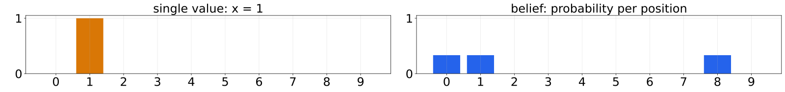
Tracking a Dog
- 상황: 개를 데려오는 사무실, 사무실 밖 복도를 돌아다니는 개의 위치 추적
- 센서: 목걸이의 sonar 가 신호를 쏘고 돌아오는 echo 로 앞이 문(door)인지 벽(wall)인지 판단
- 이동: 개가 걸으면 이동 방향(왼쪽, 오른쪽)도 감지, wifi 로 1 초마다 컴퓨터에 전송
- 복도: 위치 0 ~ 9 의 10 칸, 문은 0, 1, 8 위치, 원형이라 9 에서 오른쪽으로 가면 0
- 문제: door, wall, wall 처럼 들어오는 측정과 이동 정보만으로 개의 위치를 알아내는 방법
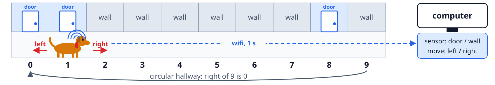
Uniform Prior
- 센서 신호를 받기 전, 개가 복도 10 칸 중 어디에 있는지 전혀 모르는 상황
- 모든 위치에 같은 확률 1/10 을 주는 배열로 믿음(belief)을 표현
- 측정 반영 전의 확률 분포를 prior 라 하며, 모든 확률의 합은 항상 1
- 조건: 복도 10 칸(0 ~ 9), 원형 복도, 센서 정보 수신 전
import numpy as np belief = np.array([1/10]*10) print(belief) plots.bar_plot(belief, ylim=(0, .3))
[0.1 0.1 0.1 0.1 0.1 0.1 0.1 0.1 0.1 0.1]
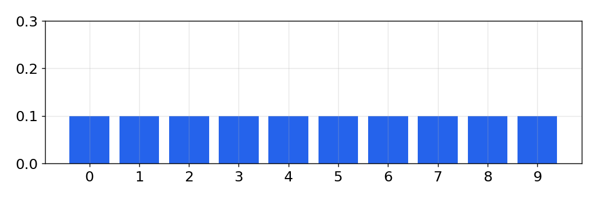
Frequentist and Bayesian
Frequentist
- 동전: 무한히 던지면 앞면 50%, 사건의 빈도로 계산
- 한계: 이미 던진 동전 하나의 상태에 대해서는 말할 수 없음
- 예: 100 일 중 4 일 비 → 내일 비 확률 1/25
Bayesian
- 동전: 이번 한 번이 앞면이라는 믿음의 강도 50%
- 사전 정보: 과거 정보(prior)를 계산에 반영
- 예: 오늘 비가 오고 전선이 정체 → 내일도 비 가능성 높음
belief: 근거 없이 믿는다는 뜻이 아닌, 현재 가진 지식의 강도를 나타내는 척도
일기 예보: 현재 상태와 과거 정보를 함께 쓰는 Bayesian 방식
Sensing a Door
- 문 1, 벽 0 으로 복도 지도를 만들고 첫 측정으로 door 를 받은 상황
- 센서가 항상 맞다면 세 문 중 어디인지 모르므로 각 문에 1/3 씩 부여
- 벽 위치를 배제해 확률이 10% 에서 33% 로 증가, 세 곳에 동시에 있다는 뜻은 아님
- 조건: 문 1, 벽 0 의 지도, 문 3 개(위치 0, 1, 8), 센서는 항상 정확하다고 가정
hallway = np.array([1, 1, 0, 0, 0, 0, 0, 0, 1, 0]) belief = hallway * (1/3) print(belief) plots.bar_plot(belief)
[0.333 0.333 0. 0. 0. 0. 0. 0. 0.333 0. ]
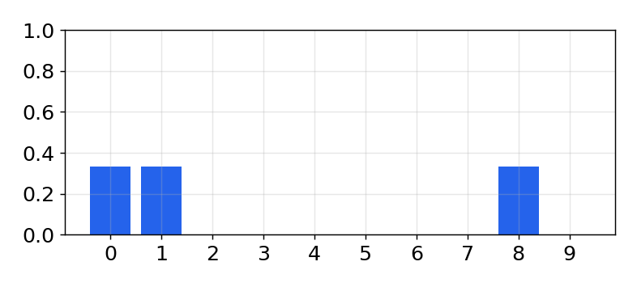
Door, Move Right, Door
- 측정 순서: door → 오른쪽으로 이동 → door
- 추론: 이 순서가 가능한 출발점은 왼쪽 끝 하나, 지금은 두 번째 문 앞
- 다른 출발점: 두 번째, 세 번째 문에서 출발했다면 이동 후 wall 이 측정되어야 함
- 확장: 긴 복도와 많은 문, 측정이 쌓일수록 후보가 좁혀짐
핵심: 측정 하나는 낮은 확률(0.333)만 주지만, 이동과 측정이 쌓이면 위치를 확정할 수 있음
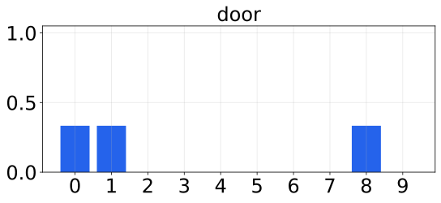
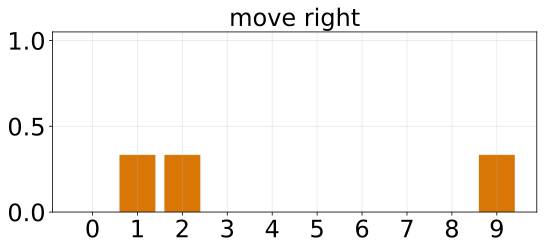
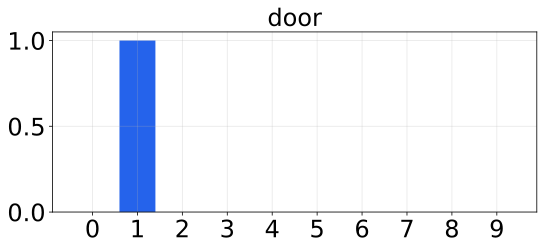
Scaling by Sensor Accuracy
- 실제 센서는 개가 문 앞에 앉아 있거나 방향이 틀리면 문을 놓치거나 잘못 감지
- 센서가 맞을 확률이 틀릴 확률의 3 배로 보고, door 측정 시 문 위치에 3 을 곱함
- 결과에서 문은 벽의 3 배이지만 합이 1.6 이라 아직 확률 분포가 아님
- 조건: 균등 prior, door 측정, 맞을 확률이 틀릴 확률의 3 배(scale = 3)
hallway = np.array([1, 1, 0, 0, 0, 0, 0, 0, 1, 0]) def update_belief(hall, belief, z, correct_scale): for i, val in enumerate(hall): if val == z: belief[i] *= correct_scale belief = np.array([0.1] * 10) reading = 1 # 1 is 'door' update_belief(hallway, belief, z=reading, correct_scale=3.) print('belief:', belief) print('sum =', sum(belief)) plots.bar_plot(belief)
belief: [0.3 0.3 0.1 0.1 0.1 0.1 0.1 0.1 0.3 0.1]
sum = 1.6000000000000003
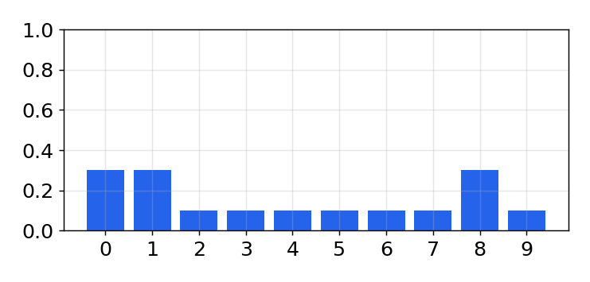
Normalization
- 각 값을 전체 합으로 나누는 정규화로 합을 1 로 맞추고, 센서 정확도에서 scale 계산
- , for 문 대신
belief[hall==z] *= scale로 한 번에 곱함 - 문은 0.1875, 벽은 0.0625 로 3 배 차이 유지, 문끼리, 벽끼리는 아직 구분 불가
- 조건: 균등 prior, door 측정, z_prob = 0.75 → scale = 3
hallway = np.array([1, 1, 0, 0, 0, 0, 0, 0, 1, 0]) from filterpy.discrete_bayes import normalize def scaled_update(hall, belief, z, z_prob): scale = z_prob / (1. - z_prob) belief[hall==z] *= scale normalize(belief) belief = np.array([0.1] * 10) scaled_update(hallway, belief, z=1, z_prob=.75) print('sum =', sum(belief)) print('probability of door =', belief[0]) print('probability of wall =', belief[2]) plots.bar_plot(belief, ylim=(0, .3))
sum = 1.0
probability of door = 0.1875
probability of wall = 0.06249999999999999
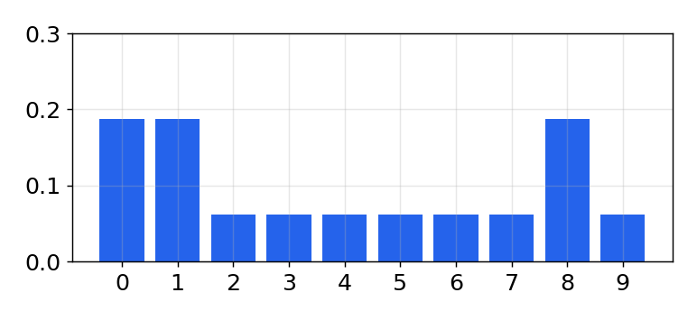
Prior, Likelihood, Posterior
- scaled_update() 를 다시 작성, 는 측정 반영 후 분포
- likelihood 계산은 센서마다 달라 lh_hallway() 로 분리, 합이 1 이 아니어도 됨
- 조건: 균등 prior, door 측정, z_prob = 0.75
def lh_hallway(hall, z, z_prob): """ compute likelihood that a measurement matches positions in the hallway.""" try: scale = z_prob / (1. - z_prob) except ZeroDivisionError: scale = 1e8 likelihood = np.ones(len(hall)) likelihood[hall==z] *= scale return likelihood belief = np.array([0.1] * 10) likelihood = lh_hallway(hallway, z=1, z_prob=.75) posterior = update(likelihood, belief) plots.bar_plot(posterior, ylim=(0, .3)) posterior
[0.188 0.188 0.062 0.062 0.062 0.062 0.062 0.062 0.188 0.062]
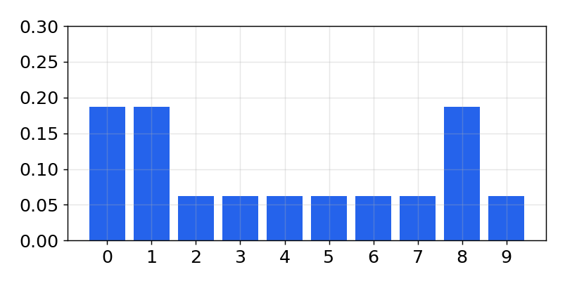
Perfect Movement
- 이동 센서가 완벽하다고 가정하고 개가 오른쪽으로 한 칸 이동했다는 보고를 받은 상황
- 모든 확률을 한 칸씩 오른쪽으로 옮기고, 원형 복도라 나머지 연산(modulo) 사용
- 결과에서 위치 9 의 0.05 는 위치 0 으로 넘어가고 분포 모양은 그대로
- 조건: 오른쪽으로 한 칸 이동 보고, 원형 복도라 9 다음은 0 (modulo)
def perfect_predict(belief, move): n = len(belief) result = np.zeros(n) for i in range(n): result[i] = belief[(i-move) % n] return result belief = np.array([.35, .1, .2, .3, 0, 0, 0, 0, 0, .05]) plt.subplot(121) plots.bar_plot(belief, title='Before prediction', ylim=(0, .4)) belief = perfect_predict(belief, 1) plt.subplot(122) plots.bar_plot(belief, title='After prediction', ylim=(0, .4))
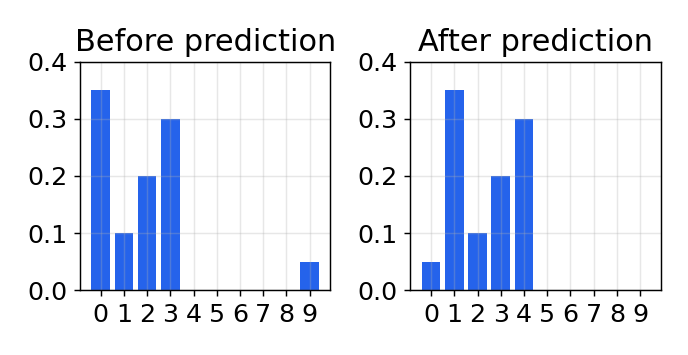
Walking Around the Hallway
- 완벽한 이동 예측을 20 번 반복해 개가 복도를 계속 도는 상황을 시뮬레이션
- time_step 슬라이더로 시점을 바꾸며 분포가 오른쪽으로 이동하는 모습 확인
- 새 측정이 없으므로 분포의 모양은 변하지 않고 위치만 이동
- 조건: 완벽한 이동, 매 step 한 칸 오른쪽, 20 step, 슬라이더로 시점 선택
from ipywidgets import interact, IntSlider belief = np.array([.35, .1, .2, .3, 0, 0, 0, 0, 0, .05]) perfect_beliefs = [] for _ in range(20): # the dog takes one step to the right belief = perfect_predict(belief, 1) perfect_beliefs.append(belief) def simulate(time_step): plots.bar_plot(perfect_beliefs[time_step], ylim=(0, .4)) interact(simulate, time_step=IntSlider( value=0, max=len(perfect_beliefs)-1));
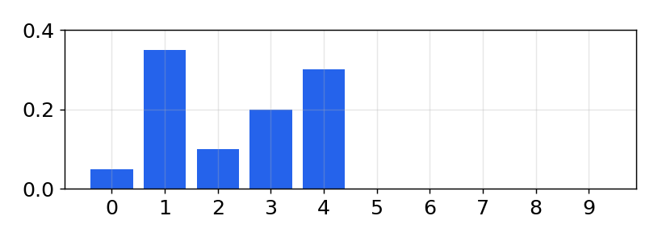
Terminology
system모델링하거나 필터링하려는 대상, 여기서는 개
state현재 구성이나 값, 여기서는 개의 위치
state evolution예측과 갱신 한 주기, system propagation
process model시스템 거동의 모델, 매 시간 한 칸 이상 이동
process error모델의 오차, system error
prediction측정 없이 만든 새로운 prior
예: 현재 17 m, 속도 15 m/s, 2 초 뒤 47 m. 윗줄(bar)은 prior(예측값) 표시

Noisy Movement
- 실제 이동 센서는 잡음이 있어 한 칸 이동 보고에도 두 칸이나 제자리일 수 있음
- 정확, 한 칸 초과, 한 칸 미달 세 경우의 확률을 각 위치에 합쳐 prior 계산
- 위치 3 에서 확실히 출발해 2 칸 이동 보고 → 위치 5 에 0.8, 위치 4 와 6 에 0.1
- 조건: 위치 3 에서 2 칸 이동 보고, 정확 80%, 한 칸 초과 10%, 한 칸 미달 10%
def predict_move(belief, move, p_under, p_correct, p_over): n = len(belief) prior = np.zeros(n) for i in range(n): prior[i] = ( belief[(i-move) % n] * p_correct + belief[(i-move-1) % n] * p_over + belief[(i-move+1) % n] * p_under) return prior belief = [0., 0., 0., 1., 0., 0., 0., 0., 0., 0.] prior = predict_move(belief, 2, .1, .8, .1) plots.plot_belief_vs_prior(belief, prior)
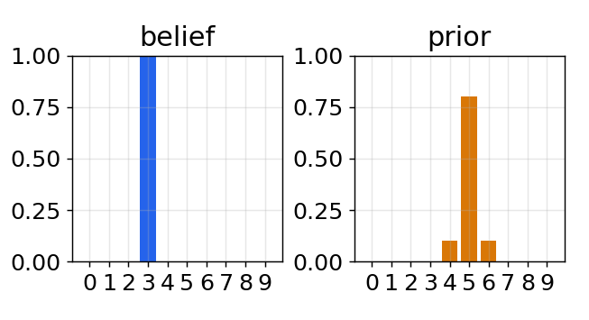
Uncertain Belief
- 시작 위치가 위치 2 (0.4) 와 위치 3 (0.6) 로 불확실한 경우의 같은 예측
- 0.38 은 2 칸 정확 이동과 한 칸 미달의 합, 0.04 는 0.4 가 한 칸 미달한 경우
- 예측 후 확률은 낮아지고 여러 위치로 퍼짐, 이 계산 과정의 이해가 핵심
- 조건: 위치 2 에 0.4, 위치 3 에 0.6, 2 칸 이동 보고, 같은 이동 오차
belief = [0, 0, .4, .6, 0, 0, 0, 0, 0, 0] prior = predict_move(belief, 2, .1, .8, .1) plots.plot_belief_vs_prior(belief, prior) prior
[0. 0. 0. 0.04 0.38 0.52 0.06 0. 0. 0. ]
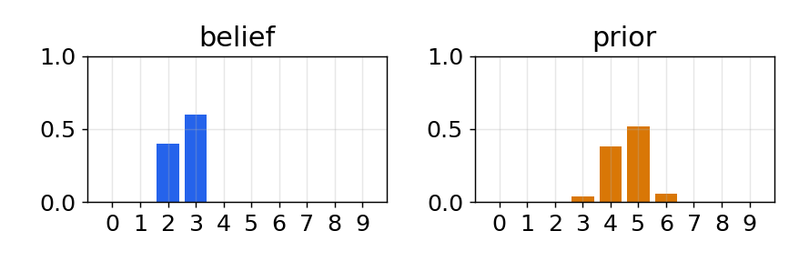
Losing Information
- 위치 0 에서 100% 확실하게 출발한 뒤 측정 없이 잡음 있는 예측만 100 번 반복
- step 슬라이더로 단계마다 분포가 넓게 퍼지며 최대 확률이 낮아지는 과정 확인
- 예측마다 정보를 잃으므로 결국 모든 위치가 거의 같은 확률(약 0.1)
- 조건: 위치 0 에서 100% 확실하게 출발, 측정 없이 100 step, 한 칸씩 이동
from ipywidgets import interact, IntSlider belief = np.array([1.0, 0, 0, 0, 0, 0, 0, 0, 0, 0]) predict_beliefs = [] for i in range(100): belief = predict_move(belief, 1, .1, .8, .1) predict_beliefs.append(belief) print('Final Belief:', belief) def show_prior(step): plots.bar_plot(predict_beliefs[step-1]) plt.title('Step {}'.format(step)) interact(show_prior, step=IntSlider( value=1, min=1, max=len(predict_beliefs)));
Final Belief: [0.104 0.103 0.101 0.099 0.097 0.096 0.097 0.099 0.101 0.103]
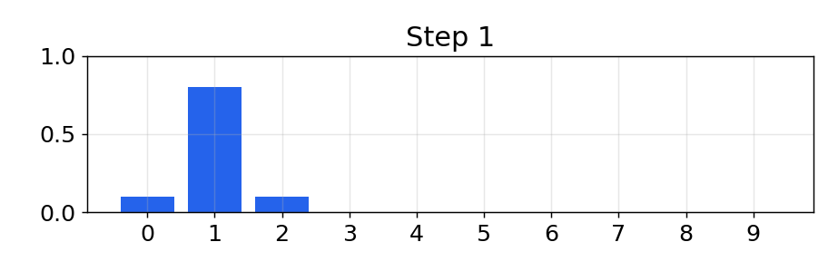
Convolution
- 일반화: 이동 오차가 두 칸, 세 칸 이상일 수도, 합성곱으로 일반화
- kernel: [0.1, 0.8, 0.1] 을 배열 위로 미끄러뜨리며 곱해서 더함
핵심: predict_move() 는 이미 합성곱, 확률 분포를 센서 오차 함수로 변형하는 연산
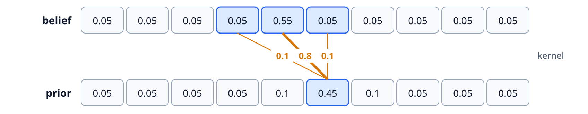
Convolution in Code
- 이동 오차가 두 칸 이상일 수 있으므로 이동 오차 분포를 kernel 배열로 일반화
- kernel 을 belief 위로 미끄러뜨리며 이웃 값과 곱해 더하는 합성곱으로 prior 계산
- 반복문은 원리 설명용으로 느림, 실제로는 convolve() 와 np.roll() 한 줄로 구현
- 조건: 위치 4 에 0.55, 한 칸 이동, kernel [0.1, 0.8, 0.1], 확률 배열 이름 pdf
def predict_move_convolution(pdf, offset, kernel): N = len(pdf) kN = len(kernel) width = int((kN - 1) / 2) prior = np.zeros(N) for i in range(N): for k in range (kN): index = (i + (width-k) - offset) % N prior[i] += pdf[index] * kernel[k] return prior belief = [.05, .05, .05, .05, .55, .05, .05, .05, .05, .05] prior = predict_move_convolution(belief, 1, [.1, .8, .1]) plots.plot_belief_vs_prior(belief, prior, ylim=(0, 0.6))
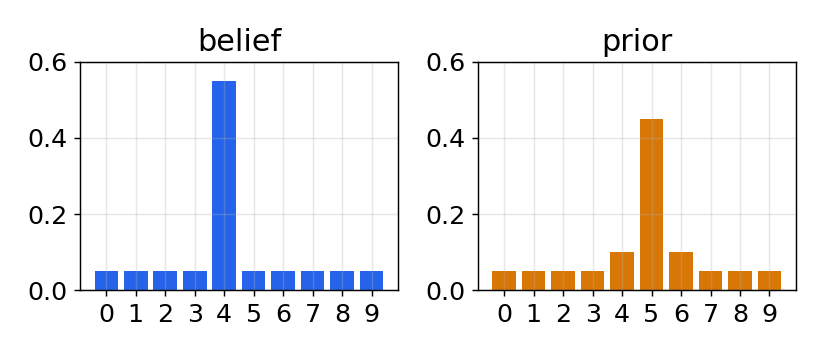
Asymmetric Kernel
- 한 칸보다 큰 이동과 좌우가 다른 kernel 에서도 예측이 올바른지 확인
- 결과는 3 칸 이동한 위치가 가장 높고, 한 칸 초과 쪽 확률이 미달 쪽보다 큼
- 확률 없이는 위치에 이동량을 더하고, 확률 분포에서는 두 분포를 합성곱
- 조건: 3 칸 이동, kernel [.05, .05, .6, .2, .1], 초과 쪽 가중치가 큼
from filterpy.discrete_bayes import predict belief = [.05, .05, .05, .05, .55, .05, .05, .05, .05, .05] prior = predict(belief, offset=3, kernel=[.05, .05, .6, .2, .1]) plots.plot_belief_vs_prior(belief, prior, ylim=(0,0.6))
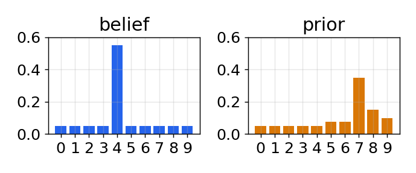
First Update
- 예측은 확실성을 낮추고 갱신은 높이므로, 두 단계를 번갈아 수행하면 개 추적기 완성
- 개가 위치 0 에서 출발해 매 주기 한 칸씩 이동하는 측정 입력, 처음엔 위치 정보 없음
- 첫 갱신 후 문 위치는 높은 확률, 벽 위치는 낮은 확률
- 조건: 위치 0 에서 출발해 매 주기 한 칸 이동, 균등 prior, door 측정, z_prob = 0.75
from filterpy.discrete_bayes import normalize, update, predict hallway = np.array([1, 1, 0, 0, 0, 0, 0, 0, 1, 0]) prior = np.array([.1] * 10) likelihood = lh_hallway(hallway, z=1, z_prob=.75) posterior = update(likelihood, prior) plots.plot_prior_vs_posterior(prior, posterior, ylim=(0,.5))
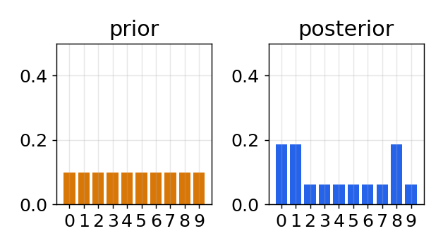
Predict, Then Sense a Door
- 첫 갱신 결과를 한 칸 이동 예측으로 옮긴 뒤, 두 번째 door 측정을 반영
- 예측은 확률을 오른쪽으로 옮기며 조금 퍼뜨리고, 갱신은 측정과 맞는 위치를 강화
- 위치 1 의 막대가 가장 높음, 0 에서 출발해 문, 이동, 문을 감지한 경우와 일치
- 조건: 첫 갱신 결과에서 시작, kernel (.1, .8, .1), 한 칸 이동, z_prob = 0.75
prior = predict(posterior, 1, kernel) likelihood = lh_hallway(hallway, z=1, z_prob=.75) posterior = update(likelihood, prior) plots.plot_prior_vs_posterior(prior, posterior, ylim=(0,.5))
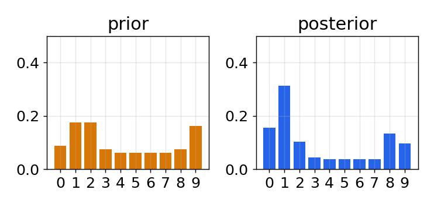
Sensing Walls
- 예측과 갱신을 두 주기 더 진행, 두 번 모두 wall 을 측정
- 측정이 쌓일수록 실제 위치(3)의 막대가 다른 위치보다 뚜렷하게 높아짐
- 이동 센서가 있다고 가정, 이동을 직접 측정하지 않으면 process model 변화를 알 수 없음
- 조건: 두 주기 더 진행, 매번 한 칸 이동 후 wall 측정, z_prob = 0.75
for z in (0, 0): # two more cycles, both sense a wall prior = predict(posterior, 1, kernel) likelihood = lh_hallway(hallway, z=z, z_prob=.75) posterior = update(likelihood, prior) plots.plot_prior_vs_posterior(prior, posterior, ylim=(0,.5))
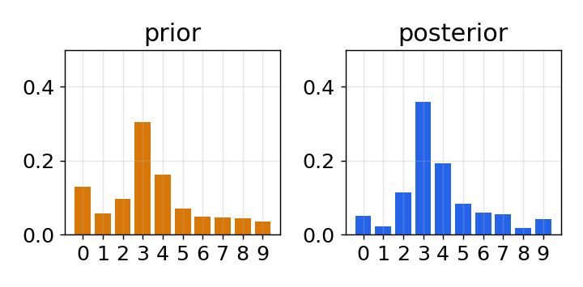
The Discrete Bayes Algorithm
Initialization
- 상태에 대한 믿음 초기화
Predict
- 시스템 거동으로 다음 시점 상태 예측
- 예측의 불확실성을 반영해 믿음 조정
Update
- 측정값과 그 정확도에 대한 믿음 획득
- 측정이 각 상태와 맞을 가능성 계산
- 그 likelihood 로 상태 믿음 갱신
predictor corrector: 예측한 뒤 측정으로 보정, Kalman filter 도 같은 알고리즘이고 계산만 다름
Simulation Function
- 측정마다 predict 로 prior, update 로 posterior 를 구하는 과정을 함수로 정리
- 잡음 없는 측정 50 개 뒤의 posterior 는 실제 위치 한 곳에 확률이 집중
- 조건: 균등 prior, kernel (.1, .8, .1), 잡음 없는 측정 50 개, z_prob = 1.0
def discrete_bayes_sim(prior, kernel, measurements, z_prob, hallway): posterior = np.array([.1]*10) priors, posteriors = [], [] for i, z in enumerate(measurements): prior = predict(posterior, 1, kernel) priors.append(prior) likelihood = lh_hallway(hallway, z, z_prob) posterior = update(likelihood, prior) posteriors.append(posterior) return priors, posteriors kernel = (.1, .8, .1) zs = [hallway[i % len(hallway)] for i in range(50)] priors, posteriors = discrete_bayes_sim(prior, kernel, zs, 1.0, hallway) plots.bar_plot(posteriors[-1], ylim=(0, 1.0))
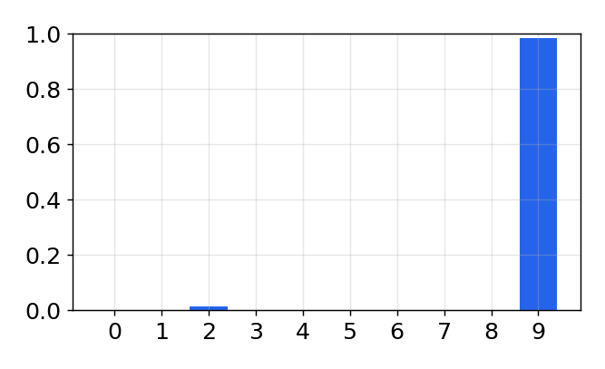
Running the Filter
- step 슬라이더로 prior (주황) 와 posterior (파랑) 를 번갈아 표시, 값을 바꿔 재실행 가능
- 검정 막대는 문 위치, 세로선은 시뮬레이션이라 알 수 있는 실제 위치
- prior 는 위치를 옮기며 확실성 감소, posterior 는 제자리에서 확실성 증가
- 조건: 잡음 없는 측정 50 개, z_prob = 1.0, step 슬라이더로 prior, posterior 교대 표시
# change these numbers to alter the simulation kernel = (.1, .8, .1) z_prob = 1.0 hallway = np.array([1, 1, 0, 0, 0, 0, 0, 0, 1, 0]) # measurements with no noise zs = [hallway[i % len(hallway)] for i in range(50)] priors, posteriors = discrete_bayes_sim(prior, kernel, zs, z_prob, hallway) anim = animate_discrete_bayes(hallway, priors, posteriors) interact(anim, step=IntSlider(value=1, min=1, max=len(zs)*2));
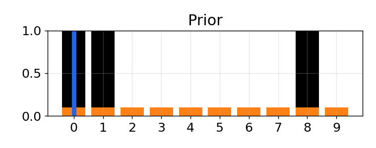
Reading the Animation
- 검정 막대: 문 위치
- 주황 막대: prior, 위치 이동, 확실성 감소
- 파랑 막대: posterior, 같은 위치, 확실성 증가
- 세로선: 실제 위치, 시뮬레이션이라 알 수 있는 값
- 문 앞: 문이 적으므로 문 감지 때 확실성이 크게 증가
- 긴 벽 구간: 문이 없는 구간에서는 확실성 감소
핵심: 예측은 분포를 옮기며 퍼뜨리고, 측정은 그 자리에서 분포를 뾰족하게 만듦
Alternating Doors
- 필터라면 잘못된 측정도 걸러내야 함, 확인을 위해 문과 벽이 번갈아 나오는 복도 사용
- 먼저 올바른 측정 6 개(1, 0, 1, 0, 0, 1)로 필터를 실행해 기준 결과 확인
- 1, 0, 1, 0, 0 순서를 보고 위치 0 또는 5 에서 출발한 경우로 좁혀짐
- 조건: 문과 벽이 번갈아 나오는 복도 [1, 0, 1, 0, 0] x 2, z_prob = 0.75
hallway = np.array([1, 0, 1, 0, 0]*2) kernel = (.1, .8, .1) prior = np.array([.1] * 10) zs = [1, 0, 1, 0, 0, 1] z_prob = 0.75 priors, posteriors = discrete_bayes_sim(prior, kernel, zs, z_prob, hallway) anim = animate_discrete_bayes(hallway, priors, posteriors) interact(anim, step=IntSlider(value=12, min=1, max=len(zs)*2));
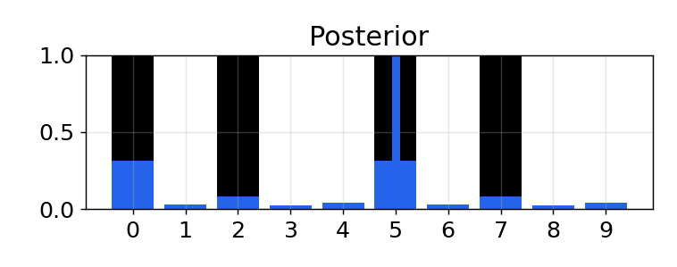
One Bad Measurement
- 올바른 측정 6 개 뒤에, 0 이어야 할 7 번째 측정을 1 로 넣은 상황
- 7 번째 주기의 posterior 에서 위치 후보들의 확률이 어떻게 변하는지 확인
- 잘못된 측정 하나로 위치에 대한 지식이 크게 약해짐
- 조건: 측정 [1, 0, 1, 0, 0, 1, 1], 마지막 1 은 원래 0 이어야 하는 오류
hallway = np.array([1, 0, 1, 0, 0]*2) kernel = (.1, .8, .1) prior = np.array([.1] * 10) z_prob = 0.75 measurements = [1, 0, 1, 0, 0, 1, 1] # last 1 should be 0 priors, posteriors = discrete_bayes_sim( prior, kernel, measurements, z_prob, hallway); plot_posterior(hallway, posteriors, 6)
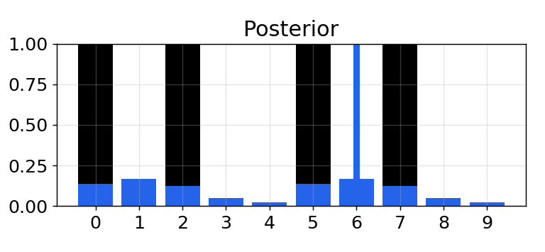
Recovering
- 잘못된 7 번째 측정 뒤에 올바른 측정 3 개가 이어지는 10 단계 실행
- 각 step 의 posterior 를 나란히 그려 7 번째(빨간색) 이후 분포의 회복 과정 확인
- 올바른 측정이 이어지며 잘못된 값을 빠르게 걸러내고 가능성 높은 위치로 수렴
- 조건: 측정 10 개 중 7 번째가 오류, z_prob = 0.75, 단계별 posterior 표시
hallway = np.array([1, 0, 1, 0, 0]*2) kernel = (.1, .8, .1) prior = np.array([.1] * 10) measurements = [1, 0, 1, 0, 0, 1, 1, 1, 0, 0] fig, axes = plt.subplots(2, 5, sharex=True, sharey=True) for i, (m, ax) in enumerate(zip(measurements, axes.flat)): likelihood = lh_hallway(hallway, z=m, z_prob=.75) posterior = update(likelihood, prior) prior = predict(posterior, 1, kernel) ax.bar(range(10), posterior, color='C3' if i == 6 else 'C0') ax.set_title('step {}'.format(i+1), fontsize=10, pad=3) ax.tick_params(labelsize=9, length=2, pad=2) ax.set(ylim=(0, .4), xticks=[0, 9], yticks=[0, .4]); plt.tight_layout(pad=0.3, w_pad=0.4, h_pad=0.4)
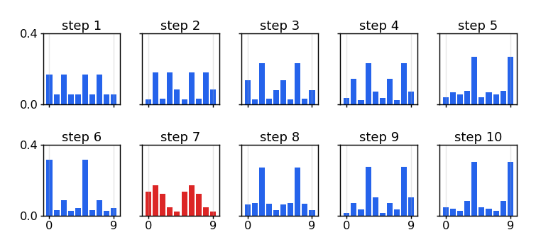
Drawbacks and Limitations
Scaling
- 변수마다 격자 차원 증가
- 4 변수면 매 단계 O(n^4) 계산
Discrete
- 연속 세계를 칸으로 근사
- 100 m 를 1 cm 로 → 10,000 칸
Multimodal
- 여러 위치에 동시에 확률
- 차량 위치 "D 거리 40%, Willow 30%"
Movement
- 상태 변화의 측정 필요
- 이동 센서가 있어야 예측 가능
그래도: 작은 문제라면 구현, 디버깅, 이해가 쉬운 이 필터가 좋은 선택, 실제 사용 가능한 완전한 필터
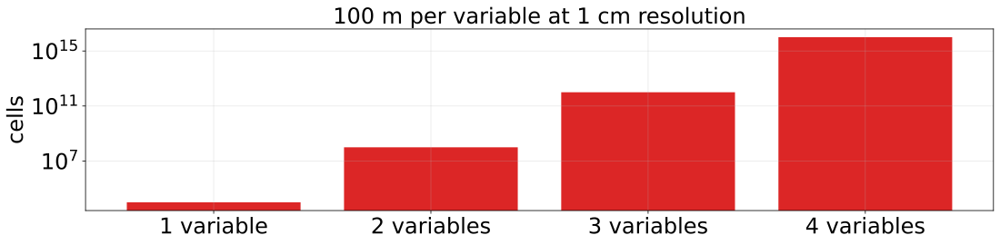
Tracking and Control
- 문제: 창고 로봇이 선로를 따라 이동, 바퀴 미끄러짐과 모터 오차로 명령한 위치와 다름
- 센서: 선로의 자석을 Hall 센서로 세어 위치 파악, 놓치거나 두 번 셀 수 있음
- 버리지 않을 정보: 로봇에 보낸 이동 명령
- 예측: 개처럼 이전 방향을 가정하지 않고, 보낸 명령과 그 오차 kernel 로 predict()
핵심: 제어 입력은 이미 알고 있는 정보, 예측 단계에 그대로 사용
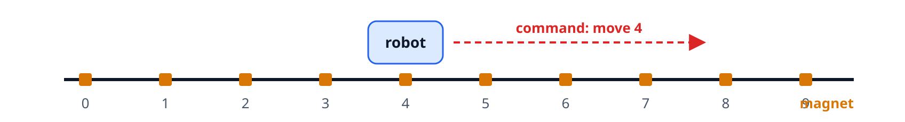
Simulating the Train
- 창고 로봇이 선로를 따라 이동, 바퀴 미끄러짐과 모터 오차로 명령과 다른 위치 도달
- move() 는 kernel 확률에 따라 한 칸 앞뒤 오차, sense() 는 가끔 한 칸 틀린 위치 보고
- 4 칸씩 8 번 이동하며 실제 위치(pos)와 센서 값(sensed) 비교
- 조건: 트랙 10 칸, 명령 4 칸, kernel [.1, .8, .1], 센서 정확도 90%
random.seed(3) robot = Train(10, kernel=[.1, .8, .1], sensor_accuracy=.9) for i in range(8): pos = robot.move(distance=4) print('time {}: pos {}, sensed {}'.format( i, pos, robot.sense()))
time 0: pos 4, sensed 4
time 1: pos 8, sensed 8
time 2: pos 2, sensed 2
time 3: pos 5, sensed 5
time 4: pos 9, sensed 9
time 5: pos 4, sensed 4
time 6: pos 8, sensed 8
time 7: pos 2, sensed 2
Train Filter
- 로봇에 보낸 이동 명령(제어 입력)과 그 오차 kernel 을 predict() 에 그대로 사용
- 이동, 센서 오차가 없으면 pos, sensed, est 가 매번 같아야 필터 코드가 올바름
- 조건: 이동 오차 없음(kernel [1.]), 센서 정확도 99.9%, 4 칸씩 4 회 이동
def train_filter(iterations, kernel, sensor_accuracy, move_distance, do_print=True): track = np.array([0, 1, 2, 3, 4, 5, 6, 7, 8, 9]) prior = np.array([.9] + [0.01]*9) posterior = prior[:] normalize(prior) robot = Train(len(track), kernel, sensor_accuracy) for i in range(iterations): robot.move(distance=move_distance) prior = predict(posterior, move_distance, kernel) m = robot.sense() likelihood = lh_hallway(track, m, sensor_accuracy) posterior = update(likelihood, prior) if do_print: print('time {}: pos {}, sensed {}, est {}'.format( i, robot.pos, m, np.argmax(posterior))) plots.bar_plot(posterior) train_filter(4, kernel=[1.], sensor_accuracy=.999, move_distance=4)
time 0: pos 4, sensed 4, est 4
time 1: pos 8, sensed 8, est 8
time 2: pos 2, sensed 2, est 2
time 3: pos 6, sensed 6, est 6
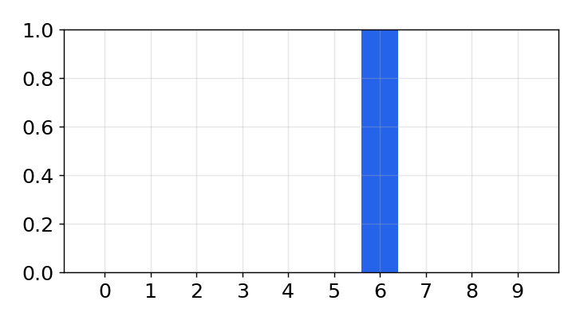
Train with Errors
- 이동 오차 kernel [.1, .8, .1] 과 센서 정확도 90% 로 4 회 이동하며 추적
- 출력에서 실제 위치(pos), 센서 값(sensed), 추정(est) 을 시간별로 비교
- 시간 1, 3 의 센서 오차에는 추정도 한 칸 어긋나지만 시간 2 에는 실제 위치로 복귀
- 조건: kernel [.1, .8, .1], 센서 정확도 90%, 4 칸씩 4 회 이동, seed 5
random.seed(5) train_filter(4, kernel=[.1, .8, .1], sensor_accuracy=.9, move_distance=4, do_print=True)
time 0: pos 4, sensed 4, est 4
time 1: pos 8, sensed 9, est 9
time 2: pos 3, sensed 3, est 3
time 3: pos 7, sensed 8, est 8
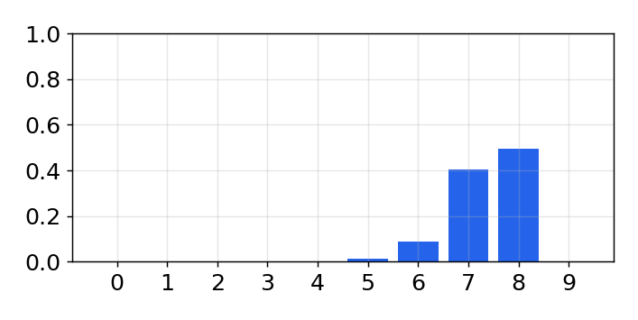
Long Run with Errors
- 센서 정확도를 80% 로 낮추고 148 ~ 151 회 긴 실행의 마지막 posterior 를 비교
- 148 회는 확신이 낮고 여러 위치에 확률이 남지만, 이후 반복에서 한 위치로 집중
- 오차가 생겨도 몇 번의 반복 안에 스스로 보정해 확신을 회복
- 조건: kernel [.1, .8, .1], 센서 정확도 80%, 4 칸씩 이동, 매 실행 seed 3
for i in range (4): random.seed(3) plt.subplot(221+i) train_filter(148+i, kernel=[.1, .8, .1], sensor_accuracy=.8, move_distance=4, do_print=False) plt.title ('iteration {}'.format(148+i))
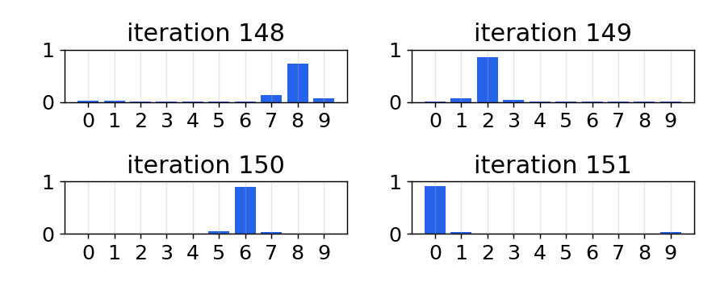
Bayes and Total Probability
Update = Bayes theorem
- 새 정보를 기존 정보에 반영하는 공식
- 모든 Bayesian 필터가 이 식의 표현
Predict = Total probability
- 여러 이동 사건의 확률을 합산
- 이전 위치 분포와 이동 확률의 합성곱
핵심: 복도의 개를 추론하며 만든 두 단계가 곧 Bayes 정리와 전확률 정리
Summary
- 표현: 위치를 칸마다의 확률(histogram)로 표현
- 갱신: 측정의 likelihood 를 곱하고 정규화, 확실성 증가
- 예측: 이동 kernel 과 합성곱, 확실성 감소
- 수렴: 잡음 있는 센서로도 가장 가능성 높은 위치로 빠르게 수렴
- 연결: Kalman filter 도 같은 논리, 계산 방식만 다름
- 한계: 차원 증가, 이산화, 다봉 분포, 이동 측정 필요
결론: 측정할 때 확률을 곱하고, 이동할 때 확률을 옮기면 해에 수렴